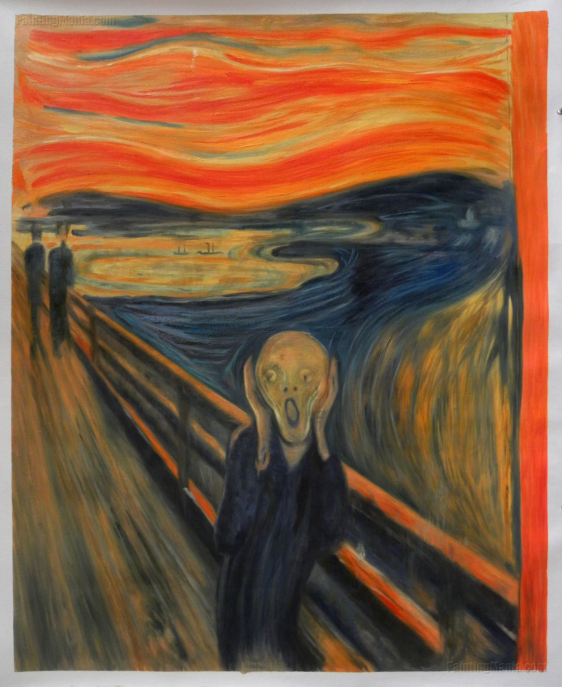

The Starry Night--by Vincent Van gogh

The Starry Night (Dutch: De sterrennacht) is an oil-on-canvas painting by the Dutch Post-Impressionist painter Vincent van Gogh. Painted in June 1889, it depicts the view from the east-facing window of his asylum room at Saint-Rémy-de-Provence, just before sunrise, with the addition of an imaginary village.[1][2][3] It has been in the permanent collection of the Museum of Modern Art in New York City since 1941, acquired through the Lillie P. Bliss Bequest. Widely regarded as Van Gogh's magnum opus,[4][5] The Starry Night is one of the most recognizable paintings in Western art.[6][7]
Although The Starry Night was painted during the day in Van Gogh's ground-floor studio, it would be inaccurate to state that the picture was painted from memory. The view has been identified as the one from his bedroom window, facing east,[1][2][17][18] a view which Van Gogh painted variations of no fewer than twenty-one times,[citation needed] including The Starry Night. "Through the iron-barred window", he wrote to his brother, Theo, around 23 May 1889, "I can see an enclosed square of wheat ... above which, in the morning, I watch the sun rise in all its glory."[2][L 2] Van Gogh depicted the view at different times of the day and under various weather conditions, such as the sunrise, moonrise, sunshine-filled days, overcast days, windy days, and one day with rain. While the hospital staff did not allow Van Gogh to paint in his bedroom, he was able there to make sketches in ink or charcoal on paper; eventually, he would base newer variations on previous versions. The pictorial element uniting all of these paintings is the diagonal line coming in from the right depicting the low rolling hills of the Alpilles mountains. In fifteen of the twenty-one versions, cypress trees are visible beyond the far wall enclosing the wheat field. Van Gogh exaggerated their size in six of these paintings, most notably in F717 Wheat Field with Cypresses and The Starry Night, bringing the trees closer to the picture plane.
The Scream --by Edvard Munch
The Scream is a composition created by Norwegian artist Edvard Munch in 1893. The Norwegian name of the piece is Skrik (Shriek), and the German title under which it was first exhibited Der Schrei der Natur (The Scream of Nature). The agonized face in the painting has become one of the most iconic images of art, seen as symbolizing the anxiety of the human condition. Munch's work, including The Scream, had a formative influence on the Expressionist movement.[1]
Munch recalled that he had been out for a walk at sunset when suddenly the setting sun's light turned the clouds "a blood red". He sensed an "infinite scream passing through nature". Scholars have located the spot to a fjord overlooking Oslo[2] and have suggested other explanations for the unnaturally orange sky, ranging from the effects of a volcanic eruption to a psychological reaction by Munch to his sister's commitment at a nearby lunatic asylum. Munch created two versions in paint and two in pastels, as well as a lithograph stone from which several prints survive. Both painted versions have been stolen, but since recovered. In 2012, one of the pastel versions commanded the at-the-time highest nominal price paid for an artwork at a public auction.
In his diary in an entry headed "Nice 22 January 1892", Munch wrote: One evening I was walking along a path, the city was on one side and the fjord below. I felt tired and ill. I stopped and looked out over the fjord – the sun was setting, and the clouds turning blood red. I sensed a scream passing through nature; it seemed to me that I heard the scream. I painted this picture, painted the clouds as actual blood. The color shrieked. This became The Scream.[3] He later described his inspiration for the image: I was walking along the road with two friends – the sun was setting – suddenly the sky turned blood red – I paused, feeling exhausted, and leaned on the fence – there was blood and tongues of fire above the blue-black fjord and the city – my friends walked on, and I stood there trembling with anxiety – and I sensed an infinite scream passing through nature.[3][4]
Among theories advanced to account for the reddish sky in the background is the artist's memory of the effects of the powerful volcanic eruption of Krakatoa, which deeply tinted sunset skies red in parts of the Western hemisphere for months during 1883 and 1884, about a decade before Munch painted The Scream.[5] This explanation has been disputed by scholars, who note that Munch was an expressive painter and was not primarily interested in literal renderings of what he had seen. Another explanation for the red skies is that they are due to the appearance of nacreous clouds which occur at the latitude of Norway and which look remarkably similar to the skies depicted in The Scream.[6][7] Alternatively, it has been suggested that the proximity of both a slaughterhouse and a lunatic asylum to the site depicted in the painting may have offered some inspiration.[8] The scene was identified as being the view from a road overlooking Oslo, by the Oslofjord and Hovedøya, from the hill of Ekeberg.[9] At the time of painting the work, Munch's manic depressive sister Laura Catherine was a patient at the mental asylum at the foot of Ekeberg.[10]